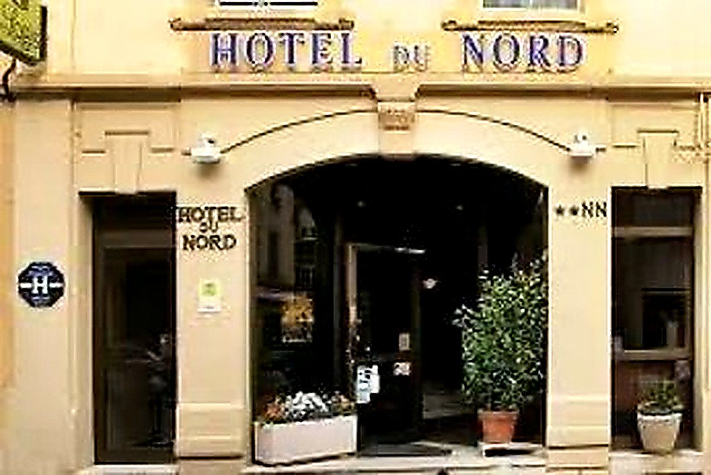
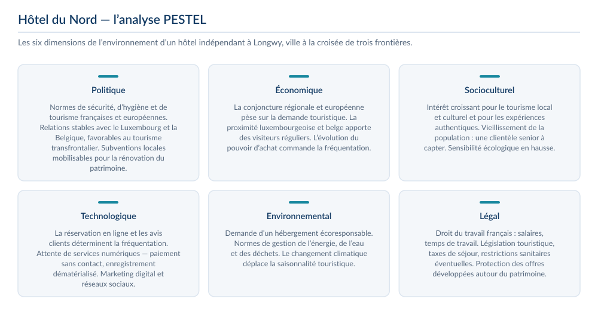
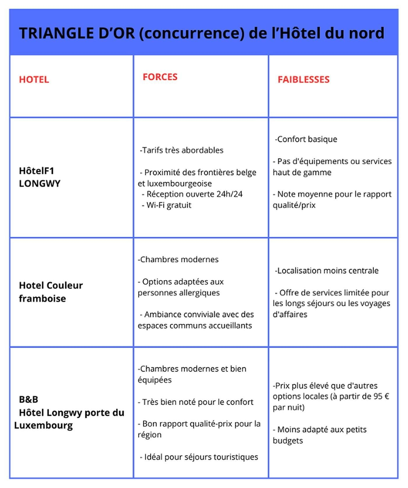
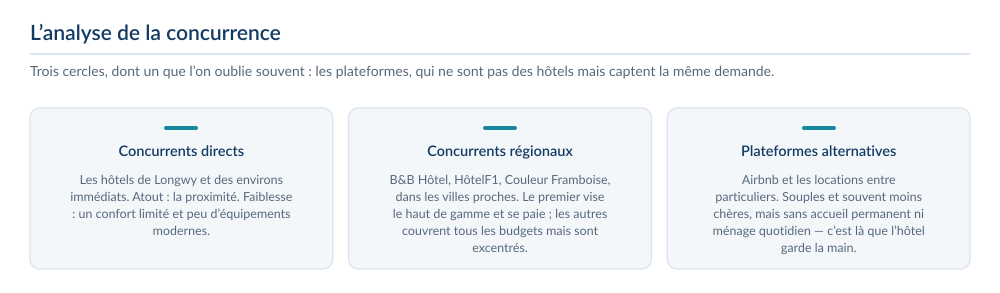
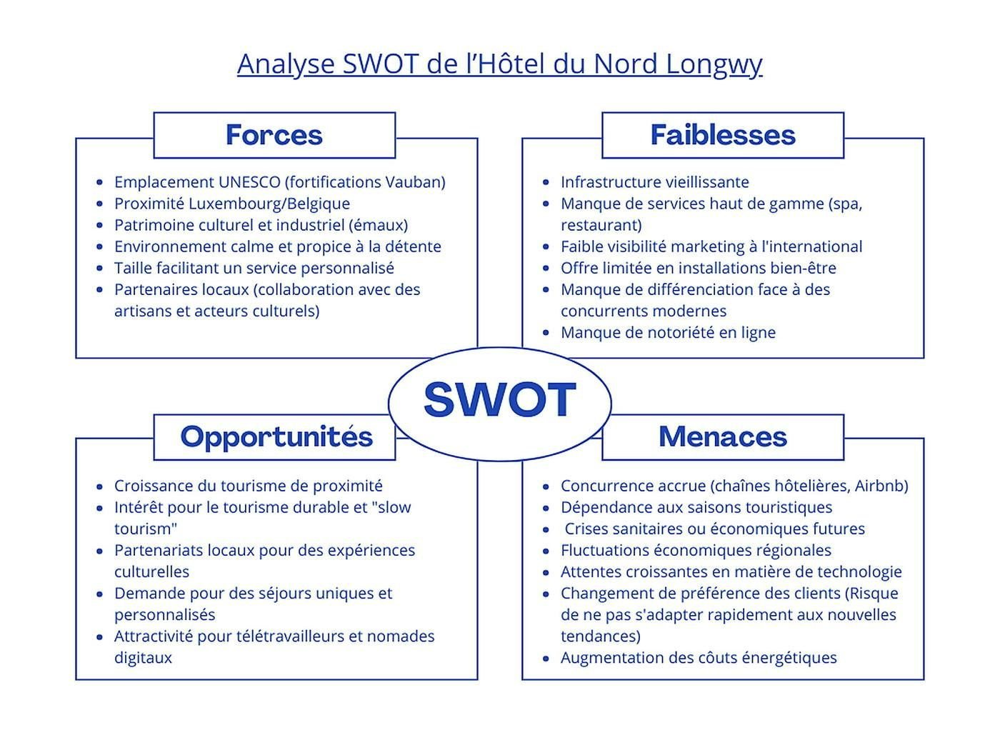
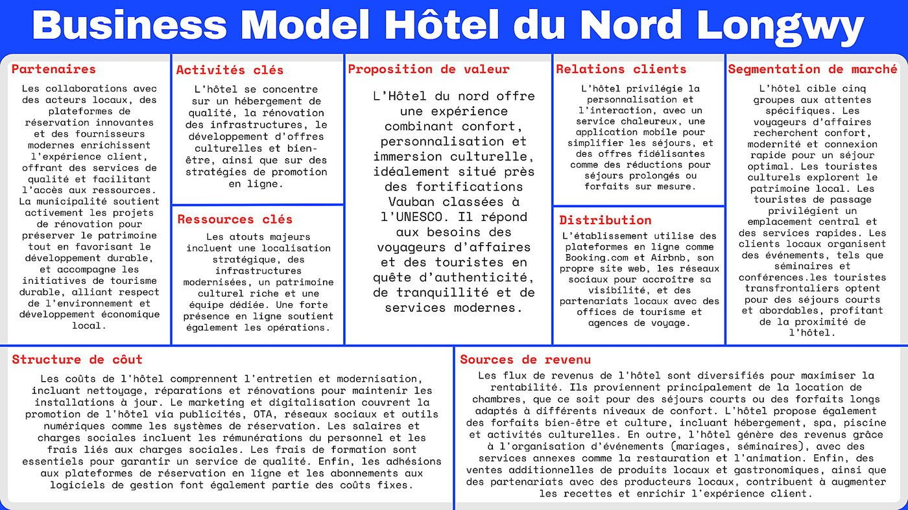
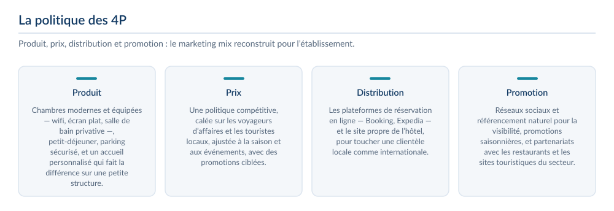
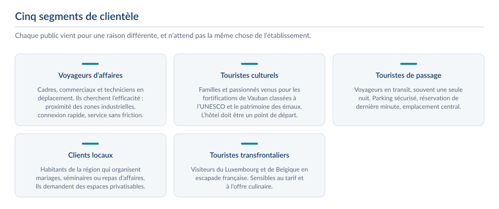
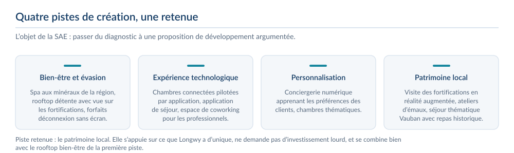
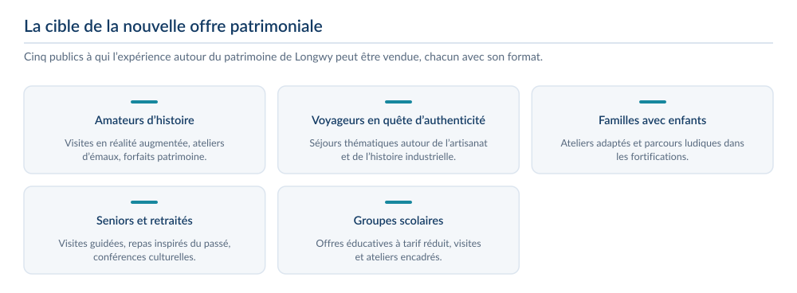

3étudiants dans l’équipe
3étoiles — établissement étudié
5segments de clientèle identifiés
Le contexte et la commande
- SAE S3.02 : proposer des pistes d’amélioration et de développement pour une organisation existante, de l’analyse à des idées concrètes.
- Cas retenu : l’Hôtel du Nord, établissement 3 étoiles au centre de Longwy, à proximité des fortifications de Vauban classées à l’UNESCO et de la frontière luxembourgeoise.
- Clientèle variée : voyageurs d’affaires, touristes culturels, visiteurs de passage et clients transfrontaliers.
La problématique
Identifier des pistes d’amélioration et de développement pour une organisation existante, de l’analyse de la situation actuelle à des idées concrètes.
L’établissement et son marché
- Un hôtel indépendant au cœur de Longwy, à proximité des fortifications de Vauban classées à l’UNESCO, et à quelques kilomètres du Luxembourg et de la Belgique.
- L’analyse PESTEL met en évidence ce qui pèse sur un établissement de cette taille : la réglementation hôtelière, la conjoncture régionale, l’intérêt croissant pour le tourisme local et durable, et surtout la dépendance aux plateformes de réservation et aux avis en ligne.
- Le triangle d’or situe l’hôtel face à trois concurrents réels — HôtelF1, Couleur Framboise et B&B Longwy — et fait apparaître un marché coupé en deux : une offre très économique au confort basique, et une offre moderne mais plus chère et excentrée.
- À cela s’ajoute une concurrence indirecte souvent sous-estimée : Airbnb et la location entre particuliers, souples et moins chères, mais sans accueil permanent ni ménage quotidien.




Le diagnostic
- Forces : l’emplacement UNESCO, la proximité du Luxembourg et de la Belgique, le patrimoine des émaux, un environnement calme et une taille qui rend le service personnalisé possible.
- Faiblesses : des infrastructures vieillissantes, l’absence de services haut de gamme, une visibilité internationale faible et peu de différenciation face à des concurrents plus modernes.
- Le Business Model Canvas a été construit de bout en bout : partenaires, activités et ressources clés, proposition de valeur, relations clients, canaux de distribution, structure de coûts et sources de revenus.
- La segmentation distingue cinq publics — voyageurs d’affaires, touristes culturels, touristes de passage, clients locaux et touristes transfrontaliers — qui n’attendent pas la même chose du même hôtel.




Les pistes de création
- Quatre pistes ont été construites puis comparées : bien-être et évasion, expérience technologique, personnalisation du séjour, et expériences liées au patrimoine local.
- La quatrième a été retenue : visites des fortifications en réalité augmentée, ateliers d’émaux avec des artisans, séjour thématique Vauban avec un repas inspiré de recettes historiques.
- Le critère de choix n’est pas l’originalité mais la faisabilité : cette piste s’appuie sur ce que Longwy a d’unique, ne demande pas d’investissement lourd, et peut se combiner avec un rooftop bien-être.
- Des travaux de rénovation l’accompagnent : modernisation des espaces communs, insonorisation et équipements des chambres, douches à l’italienne, produits d’accueil écologiques et réaménagement de la façade.

La cible de la nouvelle offre
- Amateurs d’histoire et de culture, voyageurs en quête d’authenticité, familles avec enfants, seniors et groupes scolaires : cinq publics, chacun avec un format d’offre adapté.
- Ce que j’en retire : un diagnostic n’a d’intérêt que s’il débouche sur une proposition que l’on peut chiffrer et vendre à quelqu’un de précis.

Ce que j’ai produit
- Diagnostic stratégique complet : SWOT, PESTEL et analyse du triangle concurrentiel local.
- Mix marketing 4P décliné : produit, politique tarifaire différenciée, distribution multicanal et actions de promotion.
- Segmentation de la clientèle en cinq profils, avec une proposition de différenciation pour chacun.
- Idées de développement chiffrées et hiérarchisées, dont l’idée retenue : des ateliers d’émaux avec des artisans et des visites en réalité augmentée des fortifications.
Ce que j’en retire
- Passer d’un diagnostic à des recommandations réalistes, adaptées aux moyens de l’entreprise.
- Prendre en compte le territoire et son potentiel dans une stratégie de développement.
- Hiérarchiser des idées selon leur impact et leur faisabilité.
Outils et méthodes mobilisés
SWOTPESTELMix marketing 4PBusiness Model CanvasSegmentation